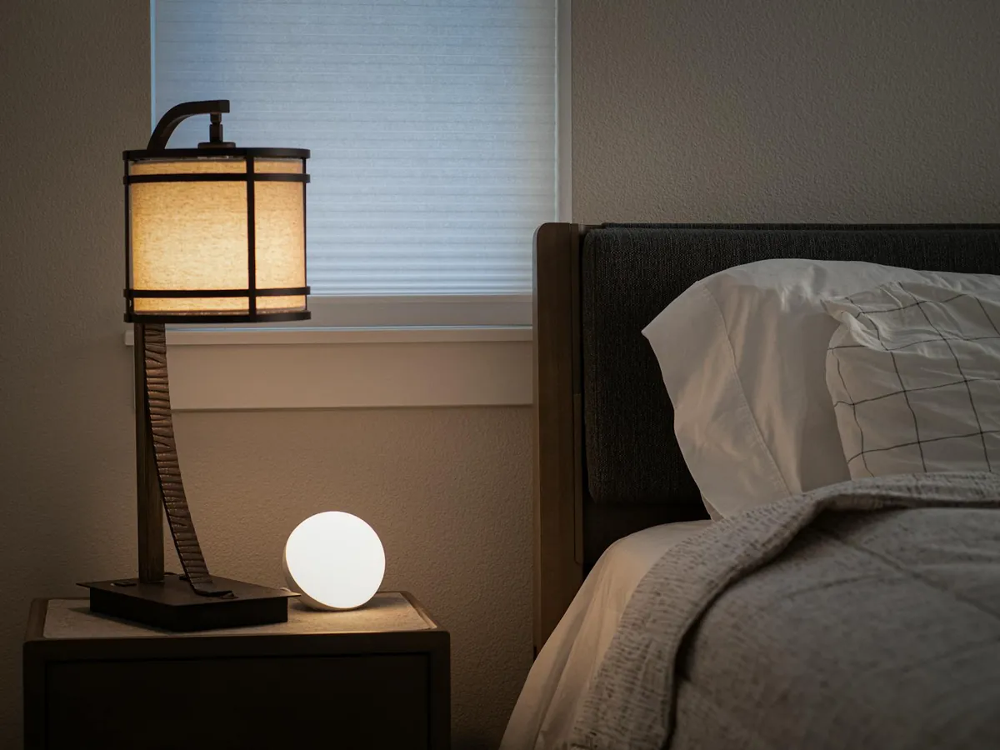
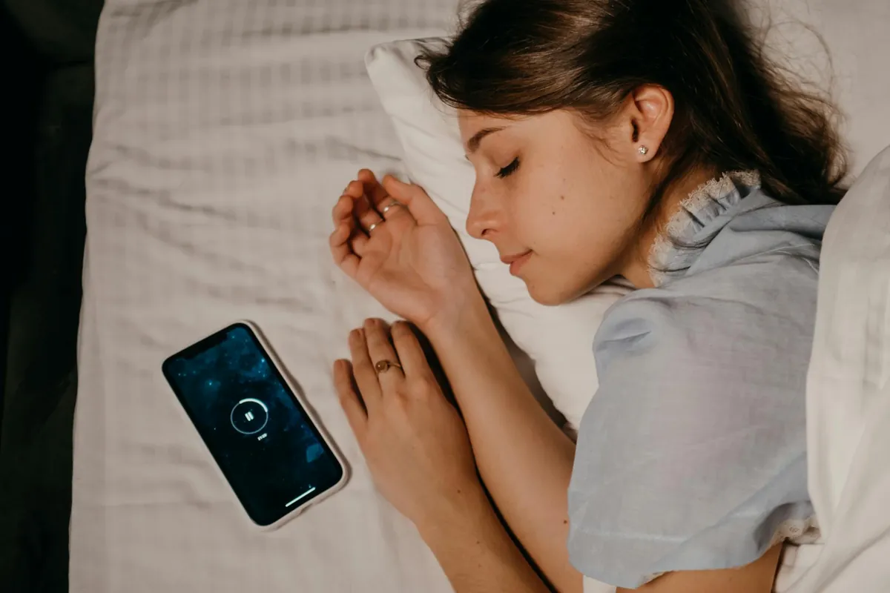

Biohacking Your Sleep: Advanced Strategies for Deeper Rest and Peak Performance

Key takeaways
- I used to think I was just naturally a night owl who needed less sleep.
- My alarm would go off, and I’d hit snooze so many times I’d practically be doing a full workout just getting out of bed.
- Track what feels sustainable and adjust gradually.
I used to think I was just naturally a night owl who needed less sleep. My alarm would go off, and I’d hit snooze so many times I’d practically be doing a full workout just getting out of bed. My focus was shot, my mood was all over the place, and I felt like I was constantly running on fumes. It wasn't until I started digging into what I now call Biohacking Your Sleep: Advanced Strategies for Deeper Rest and Peak Performance that I realized I wasn't lazy; I was just sleep-deprived and not sleeping *effectively*.
My journey into biohacking sleep wasn't about chasing some perfect, unattainable ideal. It was about reclaiming my energy and my brainpower. I learned that just *being in bed* for 8 hours isn't the same as getting 8 hours of *quality, restorative sleep*. The good news is, you don't need to be a tech guru or a millionaire to make significant improvements.
One of the first things I tackled was light. We live in a world that’s practically bathed in artificial light, especially blue light from our screens, long after the sun goes down. This messes with our natural circadian rhythm, the internal clock that tells us when to wake and sleep. I started using blue-light-blocking glasses a couple of hours before bed. It felt a bit silly at first, but the difference was noticeable. My mind felt calmer, and I found it easier to drift off.
Then there's temperature. Our body temperature naturally drops as we prepare for sleep. Creating a cooler sleep environment can signal to your body that it's time to wind down. I invested in a cooling mattress pad, and while it was a splurge, it’s been a game-changer for me. Even without a fancy pad, simply turning down the thermostat a few degrees can help. Aim for around 60-67 degrees Fahrenheit. This simple adjustment can significantly deepen your sleep cycles.
Wearable tech has also been instrumental. I started using a fitness tracker that monitors my sleep stages (light, deep, REM) and my heart rate variability (HRV). Seeing the data helped me understand *why* I felt groggy on certain days. It showed me that even if I slept for 7 hours, if I didn't get enough deep sleep, my performance suffered. This data allows me to fine-tune my sleep environment and pre-sleep routine.
Supplements are another area where I've experimented cautiously. Things like magnesium glycinate can be incredibly helpful for relaxation and sleep quality. I found that a low dose, taken about an hour before bed, made a tangible difference in my sleep onset and reduced nighttime awakenings. Always talk to your doctor before starting any new supplement, of course. For me, it was about finding what worked with my unique physiology.
The 2-Minute Win
Put your phone on grayscale mode an hour before bed. This reduces the stimulating visual input and makes it less engaging, helping you wind down.
For those who struggle with waking up, consider a sunrise alarm clock. These gradually increase light in your room, mimicking a natural sunrise. It’s a much gentler way to wake up than a jarring alarm sound. I’ve found it makes a huge difference in my morning grogginess and sets a more positive tone for the day. This is a simple yet effective part of Biohacking Your Sleep: Advanced Strategies for Deeper Rest and Peak Performance.
I also learned about the importance of consistent sleep and wake times, even on weekends. I know, I know, weekends are for sleeping in! But drastic shifts can throw off your circadian rhythm. Aim for consistency within an hour or so. This helps reinforce your body's natural sleep-wake cycle. If you're looking for more on this, check out this related healthy tip.
Don't aim for perfect. Aim for progress. Some nights will be better than others. The key is to implement these strategies consistently and learn from your sleep data and how you feel. Perfectionism is the enemy of sustainable healthy habits.
My journey has been about understanding my body's signals and using science-backed tools to support its natural processes. It's not about complicated routines or expensive gadgets, although some can help. It's about making informed choices that optimize your sleep. If you're looking for another practical guide, this another practical guide might be useful.
Biohacking Your Sleep: Advanced Strategies for Deeper Rest and Peak Performance is an ongoing process. It requires experimentation and patience. But the rewards—more energy, sharper focus, better mood, and improved overall health—are absolutely worth it. For a similar wellness insight, consider this similar wellness insight.
Remember, consistent effort is key. To help you stay consistent with this, consider this stay consistent with this. And if you're interested in more, you can always explore more sleep guides.
Disclosure: This page may contain affiliate links.
Recommended Reading
- Biohacking Your Sleep: Optimize Rest for Peak Performance
- Unlock Better Sleep: Natural Tips for Deeper Rest & Energy
- Biohacking Your Sleep: The Ultimate Guide to Better Rest and Recovery
More in sleep
 sleep
sleepUnlock Better Sleep: Natural Tips for Deeper Rest & Energy
Struggling with sleep? Unlock better sleep with natural tips for deeper rest and more energy. Discover environmental twe
Read article →
sleepBiohacking Your Sleep: The Ultimate Guide to Better Rest and Recovery
Struggling with sleep? Discover cutting-edge biohacking techniques and scientifically-backed strategies for Biohacking Y
Read article →Related posts
sleepUnlock Better Sleep: Natural Tips for Deeper Rest & Energy
Struggling with sleep? Unlock better sleep with natural tips for deeper rest and more energy. Discover environmental twe
Read article →Biohacking Your Sleep: The Ultimate Guide to Better Rest and Recovery
Struggling with sleep? Discover cutting-edge biohacking techniques and scientifically-backed strategies for Biohacking Y
Read article →
sleepBiohacking Your Sleep: Optimize Rest for Peak Performance
Struggling with sleep? Discover science-backed biohacking techniques to optimize rest for peak performance. Learn about
Read article →